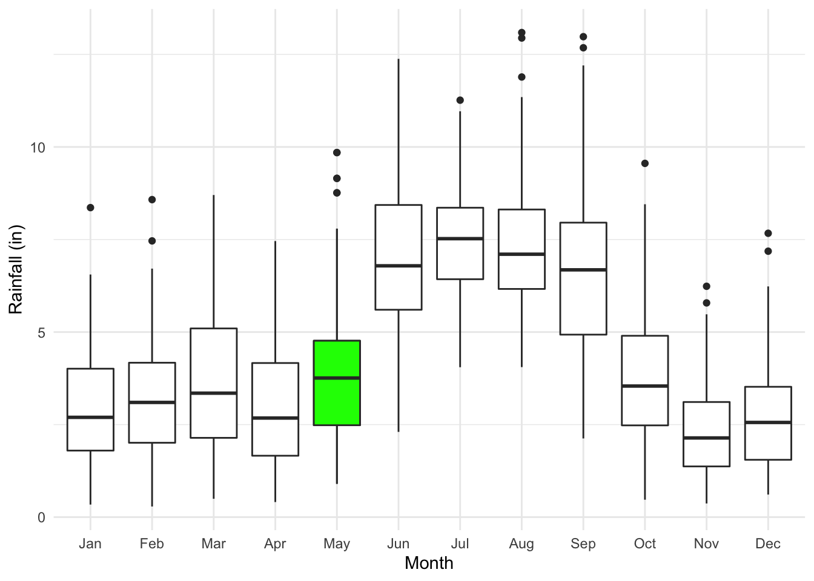
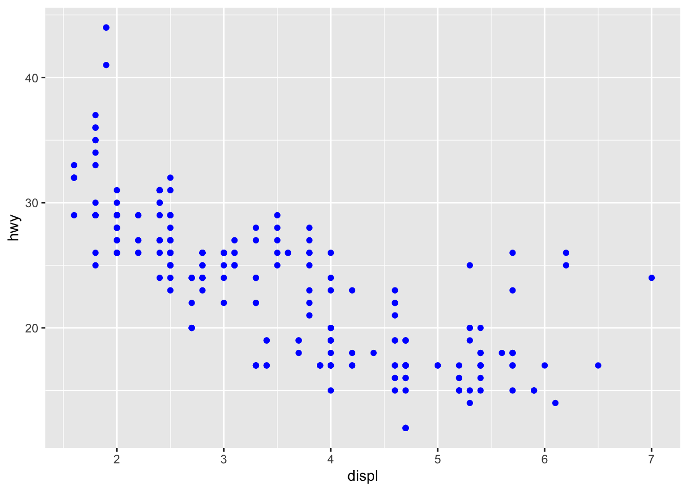
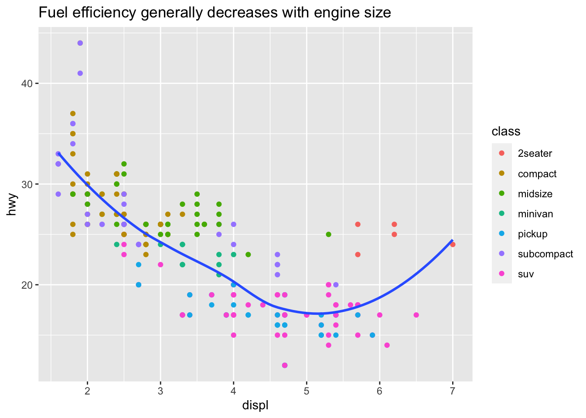

Tuesday, September 19, 2022
Today
- More about making graphs in R
Comparing distributions
Previously you learned how to make a histogram from data. To review, consider again the Florida rainfall data.
Import the data.
loc <- "http://myweb.fsu.edu/jelsner/temp/data/FLprecip.txt"
FLp.df <- readr::read_table(loc, na = "-9.900")##
## ── Column specification ────────────────────────────────────────────────────────
## cols(
## Year = col_double(),
## Jan = col_double(),
## Feb = col_double(),
## Mar = col_double(),
## Apr = col_double(),
## May = col_double(),
## Jun = col_double(),
## Jul = col_double(),
## Aug = col_double(),
## Sep = col_double(),
## Oct = col_double(),
## Nov = col_double(),
## Dec = col_double()
## )Then use ggplot() and geom_histogram() functions to make a histogram of rainfall during March and add a label on the horizontal axis (x-axis). Here you assign the plot to an object called p1. An list object is created in your environment but nothing is plotted until you type the object name.
library(ggplot2)
p1 <- ggplot(data = FLp.df) +
geom_histogram(mapping = aes(x = Mar),
bins = 11,
fill = "green3",
col = "white") +
xlab("March Rainfall in Florida (in)")
p1The histogram shows the shape of the distribution. The distribution is made up of all 118 years of March rainfall. Most years have rainfall values between 2 and 4 inches. A few years have values that exceed 7.5 inches.
The average, median, and standard deviations are obtained as follows:
FLp.df |>
dplyr::select(Mar) |>
dplyr::summarize(avg = mean(Mar),
med = median(Mar),
sd = sd(Mar),
min = min(Mar),
max = max(Mar))## # A tibble: 1 × 5
## avg med sd min max
## <dbl> <dbl> <dbl> <dbl> <dbl>
## 1 3.66 3.35 1.95 0.496 8.70The average value is larger than the median value and the histogram is not symmetric. That is, the number of cases with with low rainfall exceeds the number of cases with heavy rainfall.
The histogram helps us to describe the statistical distribution of the values.
To see this, recall that you can generate values from any distribution. For example you generate values from a normal (Guassian distribution) with the rnorm() function by specifying the mean and the standard deviation.
Here you do this using the mean and standard deviation from our rainfall values. Since there are 118 March rainfall values (one for each year) you set n = 118.
nd <- rnorm(n = 118,
mean = 3.65,
sd = 1.95)
nd## [1] 6.7416884 0.2139696 2.7433698 3.8824960 0.6194203 4.4354257
## [7] 5.4050169 0.8092758 -0.3419746 7.5958964 -2.5483778 5.5816917
## [13] 3.1746390 5.8613094 5.6541227 0.9086666 6.3098643 2.7549266
## [19] 3.8427015 6.3239940 3.4684659 5.3702174 1.4655571 2.6863474
## [25] 4.3661373 7.5019611 4.1326324 3.5311833 3.0550273 3.0955286
## [31] 3.5985192 -1.0867786 -0.4001121 1.8175477 4.3137304 6.5331517
## [37] 3.2289950 1.1430855 3.4980687 2.4295630 2.7532689 4.8229282
## [43] 2.7737379 4.3975801 -1.3843887 5.9203663 1.2241661 3.9597285
## [49] 3.9163964 5.6894578 3.8132714 3.1678973 4.3318985 7.7737934
## [55] 5.9390685 3.5930825 7.1304144 1.2929749 2.6178412 3.6042137
## [61] 5.7586311 4.9468082 1.7642494 2.2107400 1.0706937 2.2323835
## [67] 0.4622967 6.4902349 3.4607394 2.8777164 2.2998399 4.1054467
## [73] 0.1484932 2.1125788 3.7443694 3.3144648 5.9140059 0.5406493
## [79] 6.3481199 3.2473482 4.8429054 4.3916607 6.1921813 3.9140055
## [85] 2.9784233 2.1965664 4.1856974 3.5287084 2.4022348 2.4280930
## [91] 5.0584030 5.7855713 3.7728832 1.2280599 4.3302056 4.2992629
## [97] 6.4965545 4.7139889 5.5938008 2.7929664 1.1824149 2.6774331
## [103] 6.9224717 4.0089298 4.6029910 2.7755865 2.7627575 5.0998429
## [109] 2.2951031 1.6149303 5.5045684 6.8846473 3.2636776 6.2280476
## [115] 1.7441248 4.7856600 4.2775693 5.0885180Collectively these values look quite a bit like the actual rainfall. Let’s make a histogram from these 118 values and assign it to p2.
df <- data.frame(nd)
p2 <- ggplot(data = df) +
geom_histogram(mapping = aes(x = nd),
bins = 11,
col = "white") +
xlab("Gaussian Distribution")
p2Let’s do the same for a set of values from a uniform distribution and from a gamma distribution.
ud <- runif(n = 118,
min = .5,
max = 8.7)
p3 <- ggplot(data = df) +
geom_histogram(mapping = aes(x = ud),
bins = 11,
col = "white") +
xlab("Uniform Distribution")
gd <- rgamma(n = 118,
shape = 3.2,
rate = .9)
p4 <- ggplot(data = df) +
geom_histogram(mapping = aes(x = gd),
bins = 11,
col = "white") +
xlab("Gamma Distribution")Now put all four plots on a single graph. You do this with the {patchwork} package.
The package gives operators like + and / different meanings when applied to ggplot objects.
library(patchwork)##
## Attaching package: 'patchwork'## The following object is masked from 'package:MASS':
##
## area(p1 + p2) / (p3 + p4)
What distribution best matches the shape of the March rainfall values?
Box plots
A box plot graphically illustrates summary statistics. The summary statistics include the minimum value, the maximum value, the 1st & 3rd quartile values, and the median value.
A non-ggplot way to create a box plot is to use the function boxplot(). Here you get a box plot of the May rainfall.
boxplot(FLp.df$May)The function boxplot() is from the base {graphics} package. Others from this package include hist() for histograms and plot() for scatter plots.
The base graphics lets you manipulate details of a graph. For example:
boxplot(FLp.df$May,
ylab = "May Rainfall in FL (in)")
f <- fivenum(FLp.df$May)
text(rep(1.3, 5), f, labels = c("Minimum", "1st Quartile",
"Median", "3rd Quartile",
"Maximum"))
text(1.3, 7.792, labels = "Last Value Within\n 1.5xIQR Above 3rd Q")
The box plot illustrates the five numbers graphically. The median is the line through the box. The bottom and top of the box are the 1st and 3rd quartile values. Whiskers extend vertically from the box downward toward the minimum and upward toward the maximum.
If values extend beyond 1.5 times the interquartile range (either above or below the corresponding quartile) the whisker is truncated at the last value within the range and points are used to indicate outliers.
To make the same box plot using functions from the {ggplot2} package you use the geom_boxplot() layer.
ggplot(data = FLp.df) +
geom_boxplot(mapping = aes(y = May)) +
xlab("") +
ylab("May Rainfall in Florida (in)")Long data frames
Suppose you want to make a separate box plot for each month. In this case you make the x aesthetic the name of a column containing the vector of month names. The problem is that the month names are column labels rather than a single character vector.
You need to turn the data frame from its native ‘wide’ format to a ‘long’ format. The FLp.df is ‘wide’ because there are separate columns for each month. Wide data are more common because they are convenient for entering data and they let you see more of the data at one time.
head(FLp.df)## # A tibble: 6 × 13
## Year Jan Feb Mar Apr May Jun Jul Aug Sep Oct Nov Dec
## <dbl> <dbl> <dbl> <dbl> <dbl> <dbl> <dbl> <dbl> <dbl> <dbl> <dbl> <dbl> <dbl>
## 1 1895 3.28 3.24 2.50 4.53 4.25 4.5 7.45 6.10 4.67 3.09 2.65 1.59
## 2 1896 3.93 3.02 2.57 0.498 2.7 11.2 8.22 5.89 4.35 2.96 3.52 2.07
## 3 1897 1.84 6 2.12 4.39 2.28 5.22 7.21 6.83 11.1 4.10 1.75 2.68
## 4 1898 0.704 2.01 1.26 1.32 1.51 3.29 8.95 13.1 5.23 5.88 2.19 3.89
## 5 1899 4.52 5.92 1.90 3.40 1.11 5.80 9.26 6.71 5.13 5.88 0.751 1.94
## 6 1900 3.21 4.37 6.8 4.32 3.89 9.99 7.50 4.49 4.93 5.23 1.22 4.29You can reduce the number of columns by stacking the rainfall values into a single column and then labeling the rows by month. This preserves all the information from the wide format but does so with fewer columns.
The long data format is less familiar. It corresponds to the relational model for storing data used by databases like SQL.
Consider the following wide data frame with column names w, x, y, and z. id w x y z 1 A C E G 2 B D F H
The long data frame version would be id name value 1 w A 1 x C 1 y E 1 z G 2 w B 2 x D 2 y F 2 z H
You use the pivot_longer() function from the {tidyr} package to turn the wide data frame into a long data frame. Let’s do it and then decipher what happens.
FLpL.df <- FLp.df |>
tidyr::pivot_longer(cols = -Year,
names_to = "Month",
values_to = "Rainfall")
str(FLpL.df)## tibble [1,404 × 3] (S3: tbl_df/tbl/data.frame)
## $ Year : num [1:1404] 1895 1895 1895 1895 1895 ...
## $ Month : chr [1:1404] "Jan" "Feb" "Mar" "Apr" ...
## $ Rainfall: num [1:1404] 3.28 3.24 2.5 4.53 4.25 ...The pivot_longer() function takes all the columns to pivot into a longer format. Here you chose them all EXCEPT the one named after the - sign (Year). All variables are measured (rainfall in units of inches) except Year.
The resulting long data frame has the Year variable in the first column and the remaining column names as the name variable in the second column. You change the default name to Month by specifying the names_to = "Month" argument. The third column contains the corresponding rainfall values all in a single column names value. You change the default value by specifying the values_to = "Rainfall".
Note that the column Month is a character vector. When you make a plot using this variable the order will be alphabetical. So you change the variable from a character vector to a factor vector with levels equal to the month abbreviations.
month.abb## [1] "Jan" "Feb" "Mar" "Apr" "May" "Jun" "Jul" "Aug" "Sep" "Oct" "Nov" "Dec"FLpL.df <- FLpL.df |>
dplyr::mutate(Month = factor(Month, levels = month.abb))Note that you can reverse this with the pivot_wider() function.
FLpW.df <- FLpL.df |>
tidyr::pivot_wider(id_cols = Year,
names_from = Month,
values_from = Rainfall)Then to create the box plot specify that the x aesthetic (x-axis) to be Month and the y-axis to be Rainfall.
ggplot(data = FLpL.df) +
geom_boxplot(mapping = aes(x = Month, y = Rainfall)) +
ylab("Rainfall (in)")
The graph shows the variation of rainfall by month.
Each geom_ function is a layer. Data for the layer is specified in the function ggplot() with the data frame argument and the aes() function. To add another layer to the plot with different data you specify the data within the geom_ function.
For example, lets repeat the graph of monthly rainfall highlighting the month of May. First you filter the data frame keeping only rows labeled May and assign this to a new data frame object called May.df.
You then repeat the plot but add another geom_boxplot() layer that includes the argument data = May.df along with the corresponding aes() function. Finally you color the box green.
May.df <- FLpL.df |>
dplyr::filter(Month == "May")
ggplot(data = FLpL.df, aes(x = Month, y = Rainfall)) +
geom_boxplot() +
ylab("Rainfall (in)") +
geom_boxplot(data = May.df,
mapping = aes(x = Month, y = Rainfall),
fill = "green") +
theme_minimal()Scatter plots
An import graph is the scatter plot which shows the relationship between two numeric variables. It plots the values of one variable against the values of the other as points \((x_i, y_i)\) in a Cartesian plane.
For example, to show the relationship between April and September values of rainfall you type
ggplot(FLp.df) +
geom_point(mapping = aes(x = Apr, y = Sep)) +
xlab("April Rainfall (in)") +
ylab("September Rainfall (in)")
The plot shows that dry Aprils tend to be followed by dry Septembers and wet Aprils tend to be followed by wet Septembers.
There is a direct (or positive) relationship between the two variables although the points are scattered widely indicating the relationship is loose.
If your goal is to model the relationship, you plot the dependent variable (the variable you are interested in modeling) on the vertical axis.
Here you put the September values on the vertical axis since a predictive model would use April values to predict September values because April comes before September in the calendar year.
If the points have a natural ordering then you use the geom_line() function. For example, to plot the September Rainfall values as a time series type
ggplot(FLp.df) +
geom_line(mapping = aes(x = Year, y = Sep)) +
xlab("Year") +
ylab("September Rainfall (in)")Rainfall values fluctuate from one September to the next, but there does not appear to be a long-term trend. With time series data it is better to connect the values with lines rather than use points unless values are missing.
Create a plot of the May values of the North Atlantic oscillation (NAO) with Year on the horizontal axis. Add appropriate axis labels.
loc <- "http://myweb.fsu.edu/jelsner/temp/data/NAO.txt"
NAO.df <- readr::read_table(file = loc)
ggplot(NAO.df, aes(x = Year, y = May)) +
geom_line() +
xlab("Year") +
ylab("North Atlantic Oscillation (s.d.)")Let’s return to the mpg data frame. The data frame contains different automobiles by who made it, the model, engine size, mileage, class, etc.
names(mpg)## [1] "manufacturer" "model" "displ" "year" "cyl"
## [6] "trans" "drv" "cty" "hwy" "fl"
## [11] "class"Let’s start with a scatter plot showing highway mileage on the vertical axis and engine size on the horizontal axis.
ggplot(mpg) +
geom_point(mapping = aes(x = displ, y = hwy),
color = "blue")
You add a third variable, like class, to a two dimensional scatterplot by mapping it to an aesthetic. An aesthetic is a visual property of the objects in our plot. Aesthetics include things like the size, the shape, or the color of our points. You can display a point in different ways by changing the levels of its aesthetic properties (e.g., changing the level by size, color, type).
For example, you map the colors of our points to the class variable to reveal the class of each car.
ggplot(data = mpg) +
geom_point(mapping = aes(x = displ,
y = hwy,
color = class))
To map an aesthetic to a variable, associate the name of the aesthetic to the name of the variable inside aes(). Note in the previous plot color = was specified outside aes().
ggplot() will automatically assign a unique level of the aesthetic (here a unique color) to each unique value of the variable, a process known as scaling. ggplot() will also add a legend that explains which levels correspond to which values.
The colors show that many of the unusual points are two-seater cars. Sports cars have large engines like SUVs and pickup trucks, but small bodies like midsize and compact cars, which improves their gas mileage.
Facets
One way to add additional variables is with aesthetics. Another way, particularly useful for categorical variables, is to split our plot into facets, subplots that each display one subset of the data.
To facet a plot by a single variable, use facet_wrap(). The first argument of facet_wrap() should be a formula, which you create with ~ (tilde) followed by a variable name (here ‘formula’ is the name of a data structure in R, not a synonym for ‘equation’). The variable that you pass to facet_wrap() should be discrete.
ggplot(data = mpg) +
geom_point(mapping = aes(x = displ, y = hwy)) +
facet_wrap(~ class, nrow = 2)
To facet a plot on the combination of two variables, add facet_grid() to the plot call. The first argument of facet_grid() is also a formula. This time the formula should contain two variable names separated by a ~ with the first variable named varying in the vertical direction and the second varying in the horizontal direction.
ggplot(data = mpg) +
geom_point(mapping = aes(x = displ, y = hwy)) +
facet_grid(drv ~ cyl)
Here drv refers to the drive train: front-wheel (f), rear-wheel (r) or 4-wheel (4).
Example: Palmer penguins
Let’s return to the penguins data set. You import it as a data frame using readr::read_csv() function.
loc <- "https://raw.githubusercontent.com/allisonhorst/palmerpenguins/master/inst/extdata/penguins.csv"
penguins <- readr::read_csv(loc)## Rows: 344 Columns: 8
## ── Column specification ────────────────────────────────────────────────────────
## Delimiter: ","
## chr (3): species, island, sex
## dbl (5): bill_length_mm, bill_depth_mm, flipper_length_mm, body_mass_g, year
##
## ℹ Use `spec()` to retrieve the full column specification for this data.
## ℹ Specify the column types or set `show_col_types = FALSE` to quiet this message.head(penguins)## # A tibble: 6 × 8
## species island bill_length_mm bill_depth_mm flipper_length_… body_mass_g sex
## <chr> <chr> <dbl> <dbl> <dbl> <dbl> <chr>
## 1 Adelie Torge… 39.1 18.7 181 3750 male
## 2 Adelie Torge… 39.5 17.4 186 3800 fema…
## 3 Adelie Torge… 40.3 18 195 3250 fema…
## 4 Adelie Torge… NA NA NA NA <NA>
## 5 Adelie Torge… 36.7 19.3 193 3450 fema…
## 6 Adelie Torge… 39.3 20.6 190 3650 male
## # … with 1 more variable: year <dbl>Here you will visualize the relationship between flipper_length_mm and body_mass_g with respect to each species.
https://towardsdatascience.com/penguins-dataset-overview-iris-alternative-9453bb8c8d95
Start by creating a scatter plot with flipper length on the horizontal axis and body mass on the vertical axis.
ggplot(data = penguins) +
geom_point(aes(x = flipper_length_mm, y = body_mass_g))## Warning: Removed 2 rows containing missing values (geom_point).
Next, make the color and shape of the points correspond to the species type. Use the colors “darkorange,” “purple,” “cyan4.”
ggplot(data = penguins) +
geom_point(aes(x = flipper_length_mm,
y = body_mass_g,
color = species,
shape = species)) +
scale_color_manual(values = c("darkorange", "purple", "cyan4"))## Warning: Removed 2 rows containing missing values (geom_point).
Finally, separate the scatter plots by island.
ggplot(data = penguins) +
geom_point(aes(x = flipper_length_mm,
y = body_mass_g,
color = species,
shape = species)) +
scale_color_manual(values = c("darkorange", "purple", "cyan4")) +
facet_wrap(~ island)## Warning: Removed 2 rows containing missing values (geom_point).
An expository graph
Adding labels and titles turns an exploratory graph into an expository graph. Consider again the mpg dataset and plot highway mileage (hwy) as a function of engine size (displ) with the color of the point layer given by automobile class (class).
ggplot(data = mpg,
mapping = aes(x = displ, y = hwy)) +
geom_point(aes(color = class)) +
geom_smooth(se = FALSE) +
labs(title = "Fuel efficiency generally decreases with engine size")## `geom_smooth()` using method = 'loess' and formula 'y ~ x'The graph title should summarize the main finding. Avoid titles that just describe what the plot is, e.g. “A scatter plot of engine displacement vs. fuel economy.” If you need to add more text use subtitles and captions.
subtitle =adds additional detail in a smaller font beneath the title.caption =adds text at the bottom right of the plot, often used to describe the source of the data.
ggplot(data = mpg,
mapping = aes(displ, hwy)) +
geom_point(mapping = aes(color = class)) +
geom_smooth(se = FALSE) +
labs(title = "Fuel efficiency generally decreases with engine size",
subtitle = "Two seaters (sports cars) are an exception because of their light weight",
caption = "Data are from fueleconomy.gov")## `geom_smooth()` using method = 'loess' and formula 'y ~ x'
Exporting your graph
When you knit to HTML and a plot is produced it gets output as a png file in our project directory.
You can use the Export button under the Plots tab.
Or you can export the file directly using R code. Here the file gets put into our working directory.
png(file = "Test.png")
p1
dev.off()Note that the function png() opens the device and the function dev.off() closes it.
You list the files in your working directory with the command dir().
CHECK OUT {ggdist}